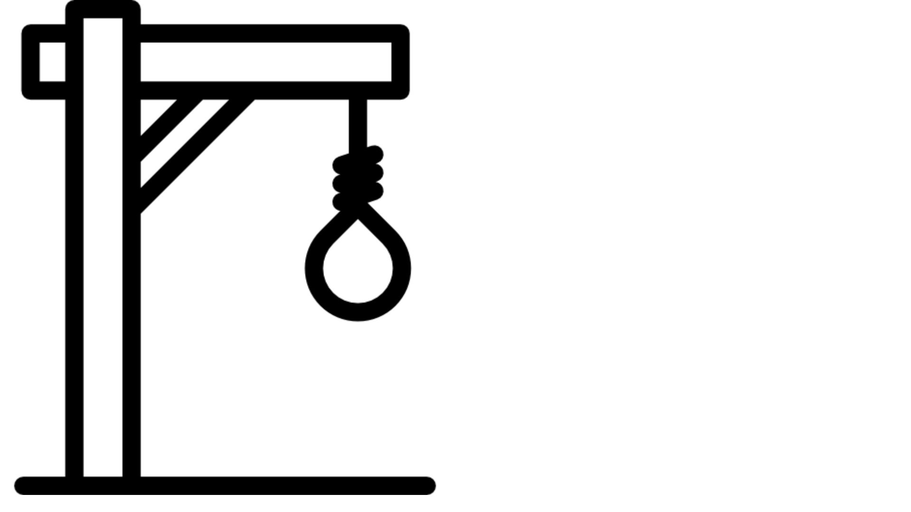
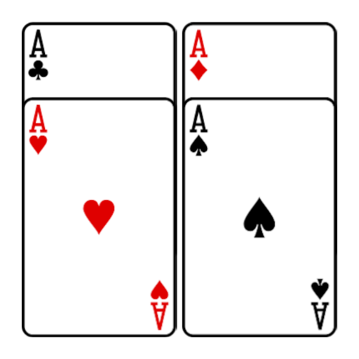
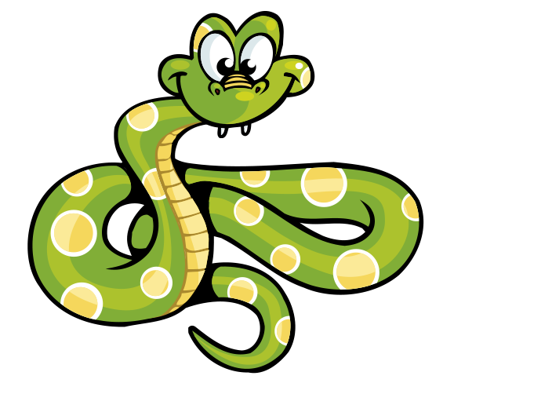

<div class="card mb-4 box-shadow" id="general">

    <div class="bg-black">
        <div class="container marketing pt-5 pb-5">
            <div class="row">
                <div class="col-lg-4 text-white">
                    
                    <h2>Ahorcado</h2>
                    <p>Un jugador piensa en una palabra, frase u oración y el otro trata de adivinarla según lo que sugiere por letras o dentro de un cierto número de oportunidades.</p>
                    <p><a class="btn btn-primary" routerLink="/juegos/ahorcado">Jugar</a></p>
                </div>
                <div class="col-lg-4 text-white">
                    

                    <h2>Mayor menor</h2>
                    <p>Juego educativo que compara dos conjuntos de objetos, y hay que determinar cuál es mayor o menor
                    </p>
                    <p><a class="btn btn-primary" routerLink="/juegos/mayormenor">Jugar</a></p>
                </div>
                <div class="col-lg-4 text-white">
                    

                    <h2>Preguntados</h2>
                    <p>Preguntados es un juego de preguntas y respuestas de seis categorías diferentes: geografía,
                        historia, arte, ciencia, entretenimiento, deportes</p>
                    <p><a class="btn btn-primary" routerLink="/preguntados">Jugar</a></p>
                </div>
                <div class="col-lg-4 text-white">
                    

                    <h2>Snake</h2>
                    <p>En el juego, el jugador o usuario controla una larga y delgada criatura, semejante a una serpiente, que vaga alrededor de un plano delimitado, recogiendo alimentos (o algún otro elemento), tratando de evitar golpearse contra su propia cola o las "paredes" que rodean el área de juego.</p>
                    <p><a class="btn btn-primary" routerLink="/juegos/snake">Jugar</a></p>
                </div>
                <div class="col-lg-4 text-white">
                    

                    <h2>Chat</h2>
                    <p>Sala de chat online, para poder relacionarse con otros jugadores en linea</p>
                    <p><a class="btn btn-primary" routerLink="/Chat">Chatear</a></p>
                </div>
                <div class="col-lg-4 text-white">
                    

                    <h2>Quien Soy</h2>
                    <p>Informacion acerca del creador de la Sala de Juegos</p>
                    <p><a class="btn btn-primary" routerLink="/QuienSoy">Informacion</a></p>
                </div>
            </div>
        </div>
    </div>

</div>